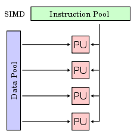
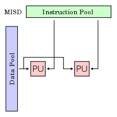
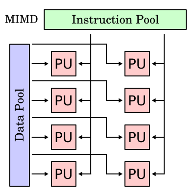

Unidad #4
procesamiento paralelo
4.1 Aspectos básicos de la computación paralela
Las computadoras paralelas pueden clasificarse según el nivel de paralelismo que admite su hardware: equipos con procesadores multinúcleo y multi-procesador que tienen múltiples elementos de procesamiento dentro de una sola máquina y los clústeres, MPPS y grids que utilizan varios equipos para trabajar en la misma tarea. Muchas veces, para acelerar la tareas específicas, se utilizan arquitecturas especializadas de computación en paralelo junto a procesadores tradicionales. Los programas informáticos paralelos son más difíciles de escribir que los secuenciales,5 porque la concurrencia introduce nuevos tipos de errores de software, siendo las condiciones de carrera los más comunes. La comunicación y sincronización entre diferentes subtareas son algunos de los mayores obstáculos para obtener un buen rendimiento del programa paralelo. La máxima aceleración posible de un programa como resultado de la paralelización se conoce como la ley de Amdahl.

4.2 Tipos de computación paralela
Las computadoras paralelas pueden clasificarse según el nivel de paralelismo que admite su hardware: equipos con procesadores multinúcleo y multi-procesador que tienen múltiples elementos de procesamiento dentro de una sola máquina y los clústeres, MPPS y grids que utilizan varios equipos para trabajar en la misma tarea. Muchas veces, para acelerar la tareas específicas, se utilizan arquitecturas especializadas de computación en paralelo junto a procesadores tradicionales.
Taxonomía de las Computadoras
Las diferentes posibilidades existentes para desarrollar sistemas paralelos hacen que una clasificación definitiva sea complicada. Se muestra una clasificación clásica propuesta por Flynn, que se basa en el ciclo de instrucciones y en el flujo de dato.
SISD: Instrucción única, datos únicos. Las instrucciones se ejecutan secuencialmente pero pueden estar solapadas en las etapas de ejecución.
SIMD: Instrucción única, datos múltiples. Son los procesadores matriciales en los que existen varias unidades de procesamiento trabajando sobre flujos de datos distintos pero ejecutando la misma instrucción.
MISD: Instrucción múltiple, datos únicos. Este se caracteriza por la existencia de varias unidades de procesamiento cada una ejecutando una instrucción diferente pero sobre el mismo flujo de datos.
MIMD: Es una técnica empleada para lograr paralelismo. Las máquinas que usan MIMD tienen un número de procesadores que funcionan de manera asíncrona e independiente.

4.2.2 Arquitectura de los computadores secuenciales
A diferencia de los sistemas combinacionales, en los sistemas secuenciales, los valores de las salidas, en un momento dado, no dependen exclusivamente de los valores de las entradas en dicho momento, sino también de los valores anteriores. El sistema secuencial más simple es el biestable. La mayoría de los sistemas secuenciales están gobernados por señales de reloj. A éstos se los denomina "síncronos" o "sincrónicos", a diferencia de los "asíncronos" o "asincrónicos" que son aquellos que no son controlados por señales de reloj.
A continuación se indican los principales sistemas secuenciales que pueden encontrarse en forma de circuito integrado o como estructuras en sistemas programados:
•Contador
•Registros
4.2.3 Organización de direcciones de memoria
La memoria de acceso secuencial son memorias en la cuales para acceder a un registro en particular se tienen que leer registro por registro desde el inicio hasta alcanzar el registro particular que contiene el dato que se requiere.
Estas memorias se clasifican en:
• Registros de desplazamiento
•Dispositivos por acoplamiento por carga
•Memorias de burbuja
4.3 Sistemas de memoria (compartida). Multiprocesadores
Un multiprocesador puede verse como un computador paralelo compuesto por varios procesadores interconectados que comparten un mismo sistema de memoria.
Los sistemas multiprocesadores son arquitecturas MIMD con memoria compartida. Tienen un único espacio de direcciones para todos los procesadores y los mecanismos de comunicación se basan en el paso de mensajes desde el punto de vista del programador.
Dado que los multiprocesadores comparten diferentes módulos de memoria, pudiendo acceder a un mismo módulo varios procesadores, a los multiprocesadores también se les llama sistemas de memoria compartida.
Dependiendo de la forma en que los procesadores comparten la memoria, se clasifican en sistemas multiprocesador UMA, NUMA y COMA. Multiproceso es tradicionalmente conocido como el uso de múltiples procesos concurrentes en un sistema en lugar de un único proceso en un instante determinado. Como la multitarea que permite a múltiples procesos compartir una única CPU, múltiples CPUs pueden ser utilizados para ejecutar múltiples hilos dentro de un único proceso.
4.3.1 Redes de Interconexión Dinámica (Indirecta) Medio compartido, Conmutadas.
Redes de Interconexión Dinámica
Las redes de interconexión dinámicas son convenientes en los casos en que se desee una red de propósito general ya que son fácilmente reconfigurables. También por eso, este tipo de Redes facilitan mucho la escalabilidad. En general, las redes dinámicas necesitan de elementos de conexión específicos como pueden ser árbitros de bus, conmutadores, etc.
Las principales topologías de redes dinámicas son las siguientes:
•Buses
•Redes de líneas cruzadas o matriz de conmutación (crossbar)
•Redes multietapa o MIN (Multistage Interconnection Network)
•Redes Omega
•Redes de línea base o Redes Mariposa
•Redes Delta o Redes de Closs
•Redes de Benes
Redes de Interconexión Dinámica
Dependiendo de la forma en que los procesadores comparten la memoria, se clasifican en sistemas multiprocesador UMA, NUMA y COMA. Multiproceso es tradicionalmente conocido como el uso de múltiples procesos concurrentes en un sistema en lugar de un único proceso en un instante determinado. Como la multitarea que permite a múltiples procesos compartir una única CPU, múltiples CPUs pueden ser utilizados para ejecutar múltiples hilos dentro de un único proceso.
Redes de Medio compartido
Entorno de medios compartidos
Ocurre cuando varios host tiene acceso al mismo medio.
Por ejemplo, si varios PC se encuentran conectados al mismo cable físico, a la misma fibra óptica entonces se dice que comparten el mismo entorno de medios.
Entorno extendido de medios compartidos
Es un tipo especial de entorno de medios compartidos en el que los dispositivos de networking pueden ampliar el entorno de modo que pueda incluir accesos múltiples o distancias mayores de cableado. El vehículo básico que empleamos para acceder a nuestra red es la conexión de nuestro ordenador a la misma. Se realiza generalmente mediante cables. Dependiendo del cable y de sus características físicas, podremos realizar diferentes conexiones.
La conexión física entre el ordenador y la red se establece siempre a través de un puerto. Un conector permite enlazar el medio de transmisión con la circuitería de acceso a la red. Para cada sistema de cableado se emplea un puerto distinto y algunas veces un dispositivo accesorio El cable, que más proyección tiene hoy en día es el de fibra óptica, pero hoy por hoy es caro y difícil de instalar. Sin embargo, es recomendable su utilización para enlazar redes distantes y para crear enlaces muy rápidos entre servidores o interconexión de redes.
Los tres principales medios de transmisión utilizados en las redes locales son:
•Par trenzado
•Cable coaxial
•Fibra óptica.
Redes Conmutadas
Consiste en un conjunto de nodos interconectados entre si, a través de medios de transmisión, formando la mayoría de las veces una topología mallada, donde la información se transfiere encaminándola del nodo de origen al nodo destino mediante conmutación entre nodos intermedios.
Una transmisión de este tipo tiene 3 fases:
•Establecimiento de la conexión
•Transferencia de la información
•Liberación de la conexión
La conmutación en un nodo a la conexión física o lógica de un camino de entrada al nodo con un camino de salida del nodo con el fin de transferir la información que llegue por el primer camino al segundo.la redes conmutadas son las redes de área extensa.
Las redes conmutadas se dividen en:
•Conmutación de paquetes
•Conmutación de circuitos
La conmutación de paquetes:
Es un método de envío de datos en una red de computadoras. Un paquete es un grupo de información que consta de dos partes: los datos propiamente dichos y la información de control, que indica la ruta a seguir a lo largo de la red hasta el destino del paquete.
La conmutación de circuitos:
Es un tipo de conexión que realizan los diferentes nodos de una red para lograr un camino apropiado para conectar dos usuarios de una red de telecomunicaciones. A diferencia de lo que ocurre en la conmutación de paquetes, en este tipo de conmutación se establece un canal de comunicaciones dedicado entre dos estaciones.
4.4 Sistemas de memoria distribuida. Multicomputadores
Un cluster es una tipo de arquitectura paralela distribuida que consiste de un conjunto de computadores independientes (y bajo coste en principio) interconectados operando de forma conjunta como un único recurso computacional Sin embargo, cada computador puede utilizarse de forma independiente o separada.
4.4.1 Redes de interconexión estáticas
Las redes estáticas emplean enlaces directos fijos entre los nodos. Estos enlaces, una vez fabricado el sistema son difíciles de cambiar, por lo que la escalabilidad de estas topologías es baja. Las redes estáticas pueden utilizarse con eficiencia en los sistemas en que pueden predecirse el tipo de tráfico de comunicaciones entre sus procesadores.
Clases de redes de interconexión
Formación lineal:
Se trata de una red unidimensional en que los nodos se conectan cada uno con el siguiente mediante N-1 enlaces formando una línea.
Mallas y toros:
Esta red de interconexión es muy utilizada en la práctica. Las redes en toro son mallas en que sus filas y columnas tienen conexiones en anillo, esto contribuye a disminuir su diámetro. Esta pequeña modificación permite convertir a las mallas en estructuras simétricas y además reduce su diámetro a la mitad.
4.5 Casos de Estudio
La programación paralela involucra muchos aspectos que no se presenta en la programación convencional (secuencial).
El diseño de un programa paralelo tiene que considerar entre otras cosas, el tipo de arquitectura sobre la cual se va a ejecutar el programa, las necesidades de tiempo y espacio que requiere la aplicación, el modelo de programación paralelo adecuado para implantar la aplicación y la forma de coordinar y comunicar a diferentes procesadores para que resuelvan un problema común. Existen varias herramientas disponibles para programación paralela.
Líneas de Investigación y desarrollo
•Paralelización de algoritmos secuenciales. Diseño y optimización de algoritmos.
•Arquitecturas multicore y multithreading en multicore.
•Arquitecturas multiprocesador.
•Modelos de representación y predicción de performance de algoritmos paralelos.
•Mapping y scheduling de aplicaciones paralelas sobre distintas arquitecturas multiprocesador.
•Métricas del paralelismo. Speedup, eficiencia, rendimiento, granularidad, superlinealidad.
•Balance de carga estático y dinámico. Técnicas de balanceo de carga.
•Análisis de los problemas de migración y asignación óptima de procesos y datos a procesadores.
•Migración dinámica.
•Patrones de diseño de algoritmos paralelos.
•Escalabilidad de algoritmos paralelos en arquitecturas multiprocesador distribuidas.
•Implementación de soluciones sobre diferentes modelos de arquitectura homogéneas y heterogéneas (multicores, clusters, multiclusters y grid).
•Ajuste del modelo de software al modelo de hardware, a fin de optimizar el sistema paralelo.
•Evaluación de performance.
•Laboratorios remotos para el acceso transparente a recursos de cómputo paralelo.